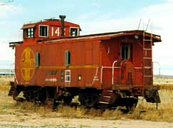

| Winslow, AZ | |
| 999146 | Caboose 999146 lies 0.5 miles east of the Visitors Center in Winslow, Arizona |
| 999179 | Caboose 999179 also lies 0.5 miles east of the Visitors Center in Winslow, Arizona |
| 999282 | Caboose 999282 is at the Visitors Center in Winslow, Arizona |
| 999282 | Caboose 999282, other side view |
| 999282 | Caboose 999282, closer view |
| 999282 | Caboose 999282, detail |